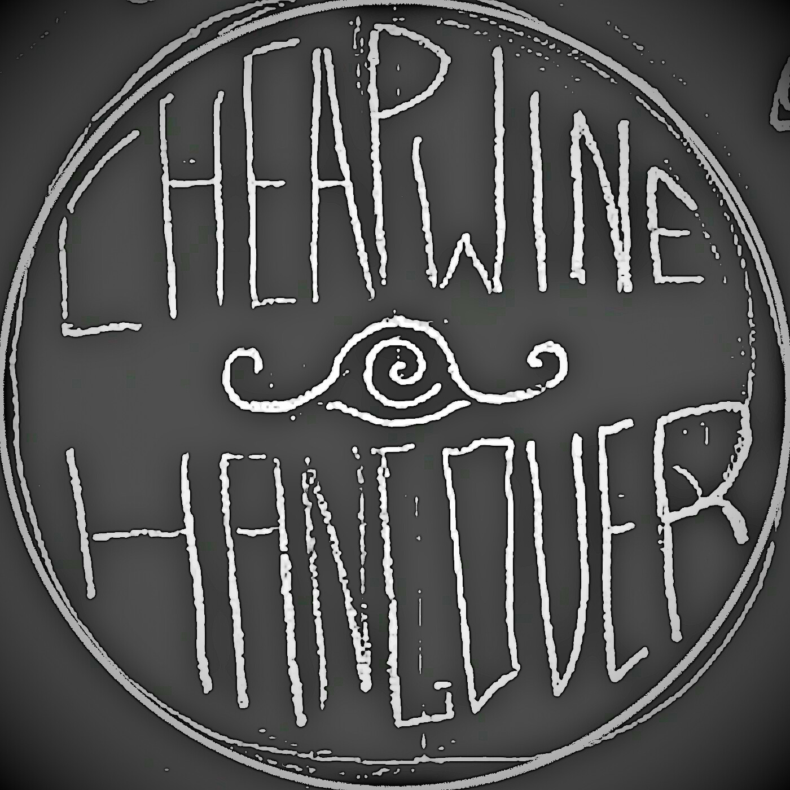

Cheapwine Hangover (EP SOON!!!)

YES EP SOON! "Live In Rowen's Basement" Is A 5 Track EP Featuring Juno On Guitar & Vocals and Rowen On Drums. This EP Will probably suck but it features VERY RAW RECORDING. Anyways Thats it.
punk rock / folk-punk band that rants about literally anything and how almost all of us are suicidal. soon we will post songs, shows, and art.
BAND MEMBERS CURRENTLY : | Juno - Guitar, Vocals, Art, Mixing | Tal - Keyboard | Ethan - Trumpet, Backing Vocals | Rowen - Drums |